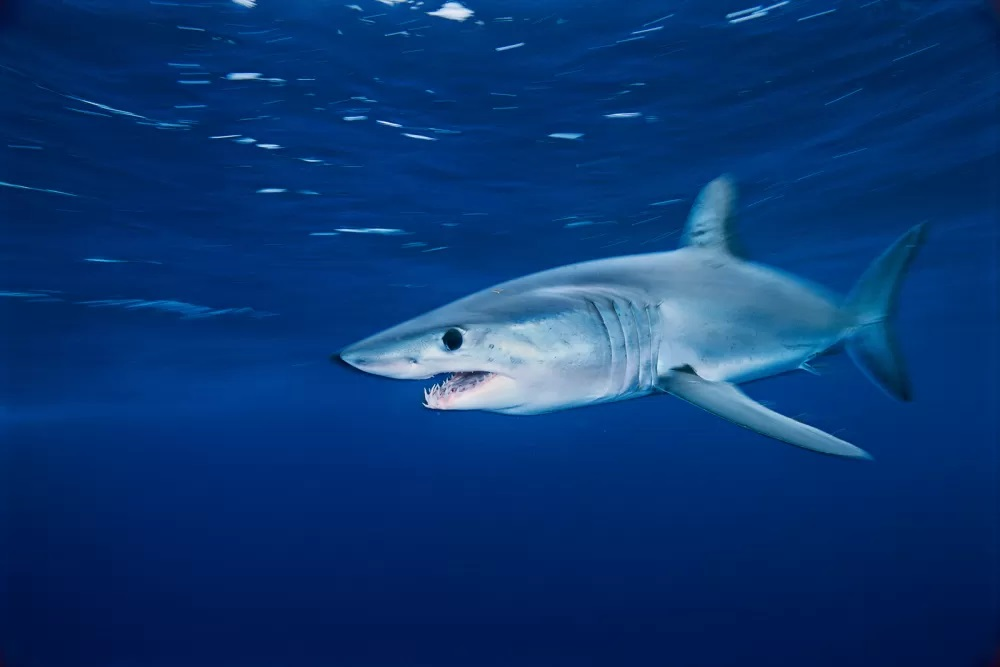

Address of Patrick Roach Enterprises ©:
200 Joseph Lane
Columbus OH 43214
United States
Check out this Section
Tongue Twisters!
Any noise annoys an oyster but a noisy noise annoys an oyster more.
Lesser leather never weathered wetter weather better.
Fred fed Ted bread and Ted fed Fred bread.
Red leather;Yellow leather
Fact of the day:
The shortfin mako shark (Isurus oxyrinchus) is found offshore in tropical and warm temperate waters of all oceans, but has been known to travel to cooler waters at times. It is very strong and the fastest known species of shark, reaching moving speeds of 31 mph (50 kph) with bursts up to 46 mph!
